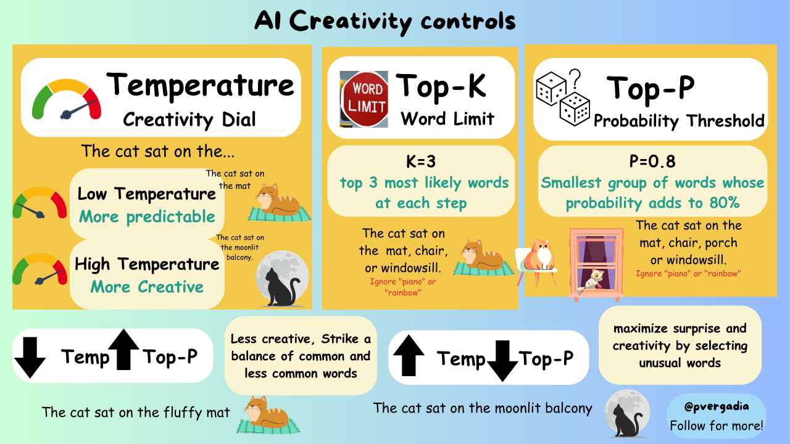
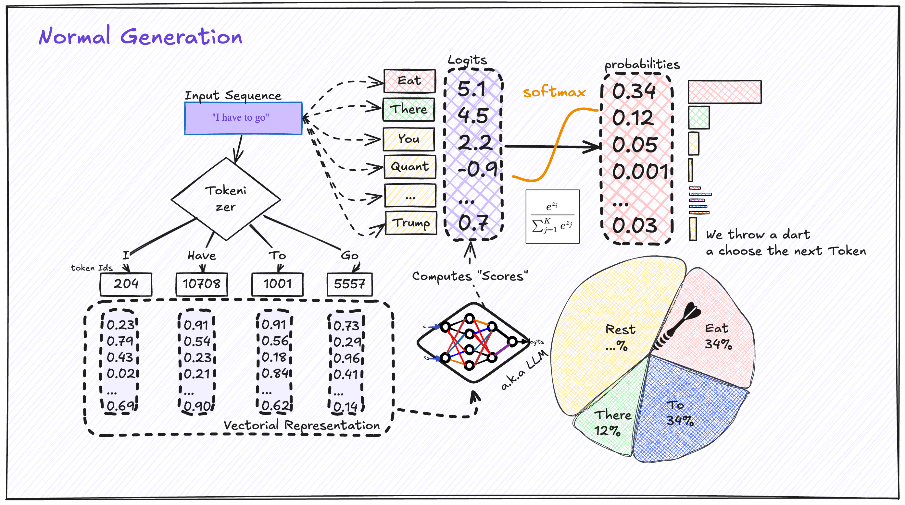

大模型输出的调味剂：温度系数、Top-K、Top-P详解
大模型每次生成文字，都是在"掷骰子"，可以通过Temperature、Top-K、Top-P 来控制骰子的随机性。
一、为什么需要这些参数？
大语言模型（LLM）的核心原理是 next-token prediction —— 根据前文预测下一个最可能出现的词。模型输出的是每个候选词的概率分布，然后从这个分布中**采样（sampling）**得到最终输出的词。
这个过程天然带着随机性。就像同一个问题问 ChatGPT 两遍，答案往往不完全一样。
但有时候，这种随机性会走向极端：
- 模型反复重复同一个词（“the the the the…”）
- 输出跑题，内容和提问风马牛不相及
- 生成一堆无意义、破碎的句子
Temperature、Top-K、Top-P 就是用来调整生成结果随机性的参数。 它们在模型的概率分布上动手，帮你控制输出的"口味"——是保守严谨，还是大胆创意。

二、温度（Temperature）：控制随机性
2.1 公式原理
Temperature 作用于模型输出的 logits，在 softmax 之前做缩放：
其中：
- 是第 个词对应的 logit 值
- 是 Temperature 参数
2.2 三种取值的效果
| 取值 | 效果 |
|---|---|
| T < 1（如 0.3~0.7） | 概率分布尖锐化，高概率词更易被选中，输出更稳定、可预测 |
| T = 1 | 保持模型原始概率分布 |
| T > 1（如 1.0~2.0） | 概率分布平滑化，低概率词也有机会被选中，输出更有创意但也更不可预测 |
2.3 典型取值建议
- T = 0.2~0.5：代码生成、数学推导等需要准确、一致输出的任务
- T = 0.7~0.9：一般对话和写作，兼顾质量与多样性
- T = 1.0~1.5：创意写作、脑暴、诗歌等需要大胆探索的任务
💡 温度的本质是重新校准概率分布的"尖锐程度"。温度越低，模型越"自信"，越倾向于选它认为最正确的答案；温度越高，模型越"困惑"，越愿意尝试不那么确定的词。
三、Top-K 采样：限制候选词范围
3.1 原理
Top-K 的思路很直接：在每次采样前，只保留概率最高的 K 个词，其余词的概率直接归零。
举例来说，假设模型输出的词概率分布是：
| 词 | 概率 |
|---|---|
| “今天” | 0.35 |
| “明天” | 0.25 |
| “昨天” | 0.15 |
| “每天” | 0.10 |
| “前日” | 0.05 |
| 其他词 | 0.10 |
设置 K = 3，则只从"今天"“明天”"昨天"中采样，其他词的采样通道被关闭。
3.2 优缺点
优点：
- 简单直观，易于理解和调参
- 输出稳定性好，不会出现太低质的词
缺点：
- K 值固定：无论分布多么集中或分散，候选集大小始终是 K
- 当模型非常"自信"时（前1~2个词概率极高），K=50 可能还是太多
- 当模型很"困惑"时（前50个词概率都很接近），K=3 可能截断太多好词
3.3 常见取值
- K = 1：贪婪采样（Greedy Decoding），只选最高概率词，完全确定性输出
- K = 10~50：对话和写作的常用区间
- K = 100+：需要更多多样性的场景
四、Top-P：动态候选池
4.1 原理
Top-P 的核心思想是：从累积概率达到 P 的最小词集合中采样。
具体步骤：
- 将所有候选词按概率从高到低排序
- 从最高的词开始累加概率，直到累积概率刚好超过 P
- 从这个最小集合中均匀采样
举例：设置 P = 0.9
| 词 | 概率 | 累积概率 |
|---|---|---|
| “今天” | 0.35 | 0.35 |
| “明天” | 0.25 | 0.60 |
| “昨天” | 0.15 | 0.75 |
| “每天” | 0.10 | 0.85 |
| “前日” | 0.05 | 0.90 ✅ 达标 |
从这 5 个词中采样，集合大小是动态的——取决于分布本身的形状。

4.2 为什么 Top-P 更受欢迎？
| 维度 | Top-K | Top-P |
|---|---|---|
| 候选集大小 | 固定 K | 动态，取决于分布形状 |
| 自适应性 | ❌ 不自适应 | ✅ 自适应分布 |
| 极端情况 | 前1个词概率0.9时，K=50仍显太多 | 动态收紧到1个词 |
| 极端情况 | 前100个词概率都相近时，K=3显太少 | 动态扩展到包含所有合理候选 |
Top-P 的本质是"动态 K"，只不过 K 的值由累积概率阈值 P 决定。
4.3 典型取值
- P = 0.5~0.7：偏保守输出，适合精准任务
- P = 0.8~0.95：对话和写作的常用区间（最常见的是 0.9）
- P = 0.99：几乎用整个词表，多样性极高但质量参差不齐
五、三个参数的配合使用
三个参数并非孤立，它们在概率分布的不同层级起作用：
- Temperature 先作用于 logits，重新调整概率分布的形状
- Top-K / Top-P 在 Temperature 之后，对候选集做二次筛选
5.1 典型组合推荐
| 场景 | Temperature | Top-P | Top-K | 说明 |
|---|---|---|---|---|
| 代码生成 | 0.2~0.3 | 0.9 | 10~20 | 精准、稳定，减少语法错误 |
| 精确问答 | 0.3~0.5 | 0.9 | 20~50 | 答案稳定，不跑题 |
| 创意写作 | 0.7~1.0 | 0.95 | 50~100 | 多样性强，语句丰富 |
| 脑暴/发散 | 1.0~1.5 | 0.98 | 100+ | 高度自由，甚至允许"荒谬"输出 |
| 翻译 | 0.3~0.5 | 0.85 | 20~50 | 忠于原文，但保留自然表达 |
5.2 参数间的相互作用
⚠️ 重要陷阱：
- Temperature 高 + Top-P 低：模型虽然"困惑"（温度高），但候选集被严重压缩，导致输出可能陷入重复循环
- Temperature 低 + Top-P 高：模型"自信"，但候选池很大，可能让一些低概率词有机会冒头，效果可能不如单纯降低温度
- Top-K 和 Top-P 通常二选一，同时设置时，通常先 Top-P 再 Top-K（API 行为因平台而异，建议确认文档）
六、 总结
| 参数 | 作用层级 | 核心功能 | 取值建议 |
|---|---|---|---|
| Temperature | logits → softmax | 调整概率分布的"尖锐度" | 0.3（精准）~ 1.0（创意） |
| Top-K | softmax 之后 | 固定截取前 K 个高概率词 | 1（贪婪）~ 100+（多样） |
| Top-P | softmax 之后 | 动态截取累积概率达 P 的最小集合 | 0.5（保守）~ 0.98（自由） |
三个参数共同决定了 LLM 的输出风格：从"死板的书呆子"到"天马行空的诗人"，全靠你手里的这三把旋钮。